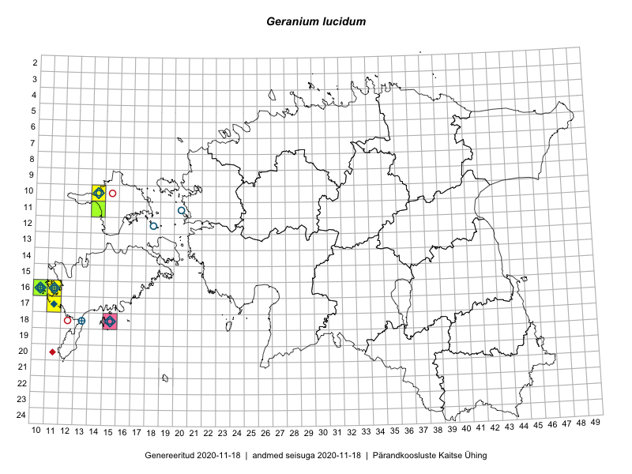

Geranium lucidum — läikiv kurereha
Geraniaceae :: Geranium lucidum L. (88)

Kaart põhineb 97 kirjel:
vaatlusi 28
herbaareksemplare 60
PKÜ kirjeid1 8
ELFi kirjeid2 1
Taime kaasaegsed ja ajaloolised leiukohad asuvad 15 ruudus.
Tingmärgid ja ruutude arvud periooditi (U3 / V4 )
█ 2006–2020 (6/–)
◆/◇ 1971–2005 (7/7)
○ 1921–1970 (6/3)
+ kuni 1920 (3/0)
× hävinud (–/1)
? kaheldav (–/0)
| Ruut | Leidja(d) | Leiuaeg | Kirje |
|---|---|---|---|
| 10-14 | Haide-Ene Rebassoo | 1957–1984 | ruut/ala: Geranium lucidum L. |
| 12-18 | Haide-Ene Rebassoo | 1957–1984 | ruut/ala: Geranium lucidum L. |
| 12-18 | H. Rebassoo | 1957–1972 | ruut/ala: Geranium lucidum L. |
| 16-10 | B. Saarsoo | 1937-06–1937-07 | ruut/ala: Geranium lucidum L. |
| 16-10 | Mari Reitalu | 1975 | ruut/ala: Geranium lucidum L. |
| 18-23 | T. Ksenofontova | 1981-06-30–1981-07-02 | ruut/ala: Geranium lucidum L. |
| 18-13 | M. Reitalu | 1969 | ruut/ala: Geranium lucidum L. |
| 11-20 | Gustav Vilbaste | 1930–1939 | ruut/ala: Geranium lucidum L. |
| 16-10 | H.-E. Rebassoo | 1975-08-01 | ruut/ala: Geranium lucidum L. |
| 16-10 | G. Vilbaste | 1930 | ruut/ala: Geranium lucidum L. |
| 16-10 | H.-E. Rebassoo | 1971-07-10 | ruut/ala: Geranium lucidum L. |
| 16-10 | G. Vilbaste | 1930–1939 | ruut/ala: Geranium lucidum L. |
| 16-10 | T. Lippmaa | 1930–1935 | ruut/ala: Geranium lucidum L. |
| 16-10 | T. Lippmaa | 1930–1939 | ruut/ala: Geranium lucidum L. |
| 16-10 | G. Vilbaste | 1930–1939 | ruut/ala: Geranium lucidum L. |
| 16-10 | Haide-Ene Rebassoo | 1960-08-26–1980-07-10 | ruut/ala: Geranium lucidum L. |
| 16-10 | Haide-Ene Rebassoo | 1960-08-26 | ruut/ala: Geranium lucidum L. |
| 16-10 | Haide-Ene Rebassoo | 1960-08-26 | ruut/ala: Geranium lucidum L. |
| 16-10 | Haide-Ene Rebassoo | 1960-08-24–1971 | ruut/ala: Geranium lucidum L. |
| 16-10 | Haide-Ene Rebassoo | 1960-08-24–1972-07-20 | ruut/ala: Geranium lucidum L. |
| 17-11 | Mari Reitalu, Triin Reitalu | 2015-05-08 | ruut/ala: Geranium lucidum L. |
| 17-11 | Mari Reitalu, Triin Reitalu | 2015-05-08 | ruut/ala: Geranium lucidum L. |
| 11-14 | Thea Kull, Peedu Saar | 2016-08-09 | ruut/ala: Geranium lucidum L. |
| 16-10 | Sirje Azarov | 2016-05-20 | ruut/ala: Geranium lucidum L. |
| 16-11 | Sirje Azarov | 2016-05-22 | ruut/ala: Geranium lucidum L. |
| 11-14 | Peedu Saar, Ott Luuk | 2017-09-13 | ruut/ala: Geranium lucidum L. |
| 11-14 | Ott Luuk, Peedu Saar | 2017-09-13 | ruut/ala: Geranium lucidum L. |
| 17-11 | Sirje Azarov, Mari Reitalu | 2019-07-10 | ruut/ala: Geranium lucidum L. |
| 16-10 | T. Lippmaa | 1924-06-18 | TU252003: Geranium lucidum L. |
| 18-13 | K.R. Kupffer | 1900-06-30 | TU252004: Geranium lucidum L. |
| 18-13 | K.R. Kupffer | 1900-06-30 | TU252005: Geranium lucidum L. |
| 18-13 | K.R. Kupffer | 1900-06-30 | TU252006: Geranium lucidum L. |
| 16-11 | H. Hiir | 1897-07 | TU252007: Geranium lucidum L. |
| 16-10 | T. Lippmaa | 1934-07-03 | TU252008: Geranium lucidum L. |
| 16-11 | L. Siilbek | 1958-06-12 | TU252009: Geranium lucidum L. |
| 16-10 | Albert Üksip | 1933-07-19 | TU252010: Geranium lucidum L. |
| 16-10 | T. Lippmaa | 1933-07-27 | TU252011: Geranium lucidum L. |
| 16-11 | P. Lackschewitz | 1900-06-21 | TU252012: Geranium lucidum L. |
| 16-11 | J. Klinge | 1900-06-21 | TU252013: Geranium lucidum L. |
| 16-10 | A. Mathiesen | 1938-06-12 | TU252014: Geranium lucidum L. |
| 11-20 | B. Fromhold-Treu | 1934-07-04 | TU252015: Geranium lucidum L. |
| 16-10 | Albert Üksip | 1933-07-19 | TU252016: Geranium lucidum L. |
| 16-11 | V. Sirgo | 1935-06-18 | TU252017: Geranium lucidum L. |
| 16-10 | E. Lellep | 1959-07-20 | TU252018: Geranium lucidum L. |
| 16-10 | Haide-Ene Rebassoo | 1959-07-20 | TU263485: Geranium lucidum L. |
| 16-10 | A. Somann | 1961-05-20 | TU263486: Geranium lucidum L. |
| 12-18 | Haide-Ene Rebassoo | 1962-06-13 | TAA0080654: Geranium lucidum L. |
| 18-13 | Gustav jun. Vilbaste | 1937-06-04 | TAA0080655: Geranium lucidum L. |
| 16-10 | Toomas Kukk | 2007-06-25 | TAA0080656: Geranium lucidum L. |
| 16-10 | Toomas Kukk | 2007-06-25 | TAA0080657: Geranium lucidum L. |
| 16-10 | Vilma Kuusk | 1949-06-24 | TAA0080665: Geranium lucidum L. |
| 16-11 | Rudolph Lehbert | 1924-07-16 | TAA0080666: Geranium lucidum L. |
| 16-11 | Silvia Krastin | 1959-06-24 | TAA0080667: Geranium lucidum L. |
| 10-14 | Gustav Vilbaste | 1931-08-14 | TAA0080668: Geranium lucidum L. |
| 16-11 | Gustav Vilbaste | 1936-06-18 | TAA0080669: Geranium lucidum L. |
| 16-11 | Elsa Varep | 1932-07-03 | TAA0080670: Geranium lucidum L. |
| 16-11 | Elsa Varep | 1932-07-03 | TAA0080671: Geranium lucidum L. |
| 16-11 | 2000-11-04 | TAA0080672: Geranium lucidum L. | |
| 11-20 | Gustav Vilbaste | 1934-07-06 | TAA0080673: Geranium lucidum L. |
| 11-20 | Gustav Vilbaste | 1934-07-06 | TAA0080674: Geranium lucidum L. |
| 16-10 | Bernhard Saarson | 1933-07-22 | TAA0080675: Geranium lucidum L. |
| 16-10 | Gustav Vilbaste | 1936-06-16 | TAA0080676: Geranium lucidum L. |
| 16-11 | Johannes Talts | 1931-07-09 | TAA0080678: Geranium lucidum L. |
| 16-11 | Johannes Talts | 1931-07-09 | TAA0080679: Geranium lucidum L. |
| 16-16 | Lehmann | TU268706: Geranium lucidum L. | |
| 16-11 | A. Üksip | 1933-09-19 | TAM0014187: Geranium lucidum L. |
| 16-10 | Paul W. Thomson | 1935-06-18 | TAM0014188: Geranium lucidum L. |
| 16-10 | H. Sogenbits | 1929-06-11 | TAM0014189: Geranium lucidum L. |
| 16-11 | V. Sirgo | 1935-06-18 | TAM0014190: Geranium lucidum L. |
| 16-10 | Olaf Schmeidt | 1977-06-02 | TAM0014405: Geranium lucidum L. |
| 16-10 | Uve Ramst | 1981-06-12 | TAM0014407: Geranium lucidum L. |
| 16-11 | Rudolph Lehbert | 1900-06-21 | TAM0063541: Geranium lucidum L. |
| 16-11 | Rudolph Lehbert | 1900-06-21 | TAM0063542: Geranium lucidum L. |
| 16-11 | Rudolph Lehbert | 1900-06-21 | TAM0063543: Geranium lucidum L. |
| 16-11 | Rudolph Lehbert | 1900-06-21 | TAM0063544: Geranium lucidum L. |
| 16-11 | Rudolph Lehbert | 1907-06-15 | TAM0063546: Geranium lucidum L. |
| 16-11 | Rudolph Lehbert | 1907-06-15 | TAM0063548: Geranium lucidum L. |
| 16-11 | Rudolph Lehbert | 1924-07-06 | TAM0066452: Geranium lucidum L. |
| 18-15 | Tõnu Ploompuu | 1993-06-15 | TALL C005592: Geranium lucidum L. |
| 16-10 | Albert Üksip | 1933-07-19 | TAM0119562: Geranium lucidum L. |
| 16-11 | Paul W. Thomson | 1933-06-18 | TAM0119563: Geranium lucidum L. |
| 16-10 | H. Sogenbits | 1929-06-11 | TAM0119564: Geranium lucidum L. |
| 16-11 | V. Sirgo | 1935-06-18 | TAM0119565: Geranium lucidum L. |
| 16-16 | Lehmann | TAM0123139: Geranium lucidum L. | |
| 16-16 | Lehmann | TAM0123140: Geranium lucidum L. | |
| 11-14 | Peedu Saar, Toomas Kukk | 2016-08-09 | TAA0133885: Geranium lucidum L. |
| 16-10 | Albert Üksip | 1933-07-19 | TAM0129336: Geranium lucidum L. |
| 16-11 | Fichtenberg | 1924–1929 | TAA0117158: Geranium lucidum L. |
| 20-11 | Erkki Otsman | 1993-07-15 | ELF: 1490 |
| 04-33 | 2009-08-29 | PKÜ: 15437 | |
| 16-11 | 2009-08-10 | PKÜ: 15373 | |
| 16-11 | 2000-11-04 | PKÜ: 4274 | |
| 13-25 | 2000-10-01 | PKÜ: 4234 | |
| 16-10 | 2000-10-31 | PKÜ: 4269 | |
| 14-24 | 2000-09-30 | PKÜ: 4217 | |
| 13-25 | 2000-10-01 | PKÜ: 4231 | |
| 18-15 | 2009-07-30 | PKÜ: 15513 |
Pärandkoosluste Kaitse Ühingu (PKÜ) andmebaas sisaldab inventeeritud koosluste kirjeldusi ja liigiloendeid. Kõige enam on andmeid niidutaimede kohta.↩︎
Eestimaa Looduse Fondi (ELF) andmebaas sisaldab inventeeritud koosluste kirjeldusi ja liigiloendeid. Eriti rohkesti on andmeid märgalade kohta.↩︎
Ruutude arv uue atlase andmekogu järgi. Muuhulgas arvestab vanemat herbaariumi, 2005. aasta atlase välitöölehtedelt uuesti digitaliseeritud andmeid jne. Uue atlase andmekogust pärinevad andmed on kaardile kantud siniste sümbolitega.↩︎
Ruutude arv 2005. aasta atlase (Kukk, T., Kull, T., Eesti taimede levikuatlas. Eesti Maaülikool, Põllumajandus- ja Keskkonnainstituut, Tartu, 2005) järgi. Andmeallikana on kasutatud levik.exe programmi, kus igas ruudus on registreeritud vaid uusim leid. Seetõttu on vanemate perioodide kohta andmed puudulikud. Kasutatud levik.exe andmestikus leidub mõningaid kõrvalekaldeid atlase trükis ilmunud versioonist, sagedamini tarnade ja käpaliste seas. Lisaks leidub selles andmestikus valik liike (peamiselt väheste leidudega tulnuktaimed), mille kaarte trükis ei avaldatud. Vana atlase andmed ruutudest, milles ei ole uue atlase andmekogus leide enne 2006. aastat, on kaardil esitatud punaste sümbolitega. Vana atlase andmetel hävinud ja kaheldavaid leiukohti pole hilisemate (taas)leidude põhjal korrigeeritud.↩︎